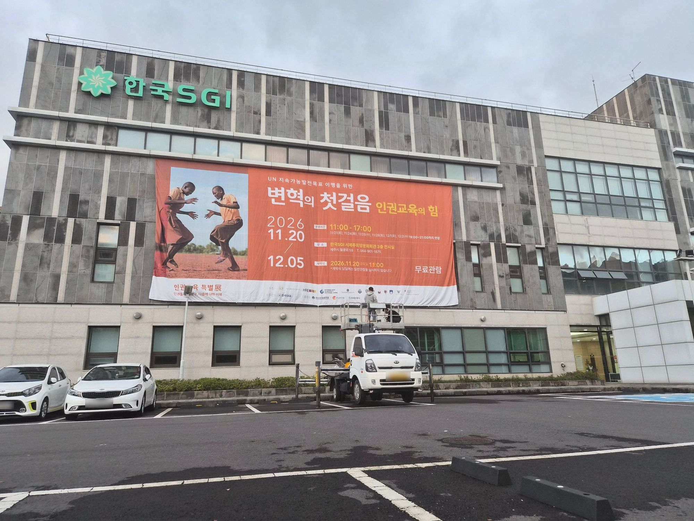
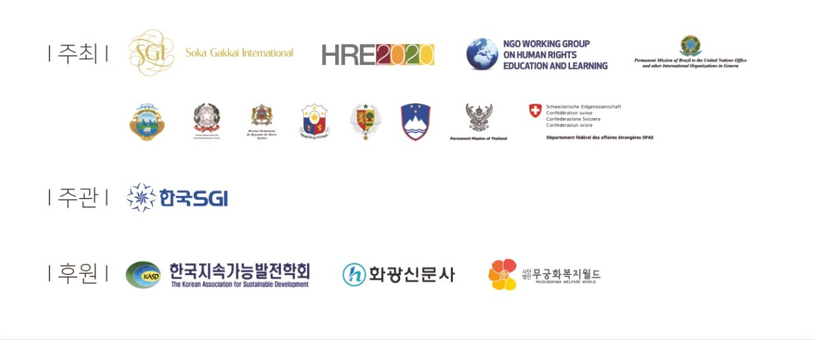

인권이란 무엇인가?
모든 사람에게 갖춰진 인간 본연의 권리인 인권의 정의를 알고, 잔혹한 제2차 세계대전 이후 세계인권선언문이 탄생한 배경과 내용을 담고 있습니다.

한 사람의 위대한 인간혁명은
이윽고 한 나라의 숙명전환도 이루고
나아가 전 인류의 숙명전환도 가능케 한다.
모든 사람에게 갖춰진 인간 본연의 권리인 인권의 정의를 알고, 잔혹한 제2차 세계대전 이후 세계인권선언문이 탄생한 배경과 내용을 담고 있습니다.
인권에 관한, 인권을 통한, 인권을 위한 교육을 통해 인권을 지키고, 변화를 일으키는 인권교육에 대해 알아봅니다.
인권교육이 개인과 집단의 가치, 신념 그리고 태도를 변화시켜 긍정적 행동으로 이어진 세계 각국의 사례를 소개합니다.
인권에 대한 존중과 증진, 보호는 정부, 다양한 주체 그리고 우리 주변의 작은 실천에서부터 시작됩니다.
인권은 우리 삶 가장 가까운 곳에서 시작됩니다. 세상을 바꾸는 따뜻한 연대와 희망의 이야기에 귀 기울여 주세요. ‘변혁의 첫걸음, 인권교육의 힘’ 전시회에 소중한 당신을 초대합니다.
전시 자세히 보기UN 지속가능발전목표 이행을 위한 ‘변혁의 첫걸음, 인권교육의 힘’
인권은 우리 삶 가장 가까운 곳에서 시작됩니다. 세상을 바꾸는 따뜻한 연대와 희망의 이야기에 귀 기울여 주세요. ‘변혁의 첫걸음, 인권교육의 힘’ 전시회에 소중한 당신을 초대합니다.
이 전시는 유엔 인권최고대표사무소(OHCHR)의 후원을 받아 SGI와 HRE2020, NGO 인권교육과 학습실무그룹이 공동으로 기획한 인권교육 및 인권 학습에 관한 교육훈련 플랫폼입니다.
인권교육 특별展은 ‘인권을 향한 탐구, 다름에 대한 이해’를 주제로, 누구나 일상에서 인권을 발견하고 함께 지켜 갈 수 있도록 전시와 영상, 체험 활동, 도서전을 한자리에 모았습니다.
인류는 제2차 세계대전 이후 전쟁의 참혹함과 인간의 존엄성이 철저하게 유린되는 아픔을 겪으면서, 인간이 인간답게 살 수 있는 세상을 위해서는 보편적이고 국제적인 기준이 필요했고, 1948년 UN은 ‘세계인권선언’을 채택, 선포하게 됩니다. 올해는 ‘세계인권선언’이 채택된 지 78주년이 되는 해입니다. 지금까지 ‘세계인권선언’이 호소하는 인권의 중요성은 각 국가, 국제기구, NGO(비정부기구) 등의 노력으로 그 가치와 정신이 지켜져 왔습니다.
하지만 진정한 ‘세계인권선언’의 가치를 지켜 가기 위해서는 모든 인권이 보호되는 사회가 되어야 하며, 그러한 사회가 되기 위해서는 ‘인권에 대한 교육’이 핵심 선결 과제라고 국제사회는 인식하기 시작했습니다. ‘2011년 UN 인권교육훈련선언’ 채택 5주년을 기념하여 제작된 이번 전시는 존엄, 평등, 그리고 평화를 촉진하고 인권침해와 남용을 예방하는 데 있어 인권교육의 중요성을 강조하고자 실시되었습니다.
아는 만큼 보입니다. 지금 이 순간에도 세계 곳곳에서 기본적인 권리를 누리지 못하는 사람들이 있습니다.
건강하고 활발한 삶을 위한 식량을 충분히 공급받지 못하고 있습니다.
어린 나이에 학업 대신 노동을 하고 있습니다.
신체적 혹은 성적 폭력을 경험합니다.
군사적 충돌 혹은 박해로 인해 거주지에서 강제로 추방됩니다.
국적이 거부되어 교육, 보건, 취업 및 이동의 자유가 제한됩니다.
여성, 남성, 아동이 이주 중에 목숨을 잃습니다.
아이들이 학교에 다니지 못하고 있습니다.
인권을 아는 것에서 변화가 시작됩니다. 3층 전시관에서 더 많은 이야기를 만나 보세요.
3층 전시관에서 네 개의 주제로 인권과 인권교육을 만납니다.
모든 사람에게 갖춰진 인간 본연의 권리인 인권의 정의를 알고, 잔혹한 제2차 세계대전 이후 세계인권선언문이 탄생한 배경과 내용을 담고 있습니다.
인권에 관한, 인권을 통한, 인권을 위한 교육을 통해 인권을 지키고, 변화를 일으키는 인권교육에 대해 알아봅니다.
인권교육이 개인과 집단의 가치, 신념 그리고 태도를 변화시켜 긍정적 행동으로 이어진 세계 각국의 사례를 소개합니다.
인권에 대한 존중과 증진, 보호는 정부, 다양한 주체 그리고 우리 주변의 작은 실천에서부터 시작됩니다.
제주특별자치도 제주시 월광로 59
3층 전시실
단체 및 관람문의 064-901-1875
인권의 의미와 역사, 아동의 권리를 다룬 패널을 주제별로 따라가며, 체험 코너와 포토존에서 직접 참여합니다.
영상관에서 인권 영상을 함께 보고, 활동실에서 워크숍과 보드게임으로 서로의 생각을 나눕니다.
인권을 주제로 한 책을 자유롭게 펼쳐 보고, 잠시 앉아 쉬어 갈 수 있는 인권도서전입니다.
공동체 기반의 불교 단체로 삶의 존엄성에 대한 존중을 중심으로 평화, 문화, 교육을 증진합니다. 192개국 및 지역의 SGI 회원들은 대승불교의 인도주의적 철학을 따릅니다. SGI는 이 밖에도 인권교육, 핵 군축, 성 평등, 지속 가능한 개발, 인도적 구호 등 여러 분야에서 여러 시민 사회 단체 및 정부 간 국제기구와 협력하고 있습니다.
www.sokaglobal.orgUN 인권교육훈련선언과 세계인권교육프로그램에 명시된 대로 국제적인 인권교육의 이행과 감시를 지원하고 강화하기 위한 세계 시민 사회 연합입니다. 시민 사회 및 정부, 국제기구와 협력하는 HRE 2020은 옹호 활동과 역량 강화, 자원 개발을 통해 인권교육을 증진하고 있습니다.
스위스 제네바의 NGO 인권 위원회에서 운영하는 실무 그룹입니다. UN의 기구, 특히 UN 인권이사회와 연계하여 네트워크 형성, 정보 공유, 조율 및 옹호 등을 통해 인권교육에 관한 전 세계 정책 입안에 비정부 기구의 참여를 확립하고자 노력합니다.
ngowghrel.wordpress.com지역을 넘어선 비공식 정부 간 조직으로, 인권교육과 훈련을 지원하고 있습니다. 브라질, 코스타리카, 이탈리아, 모로코, 필리핀, 세네갈, 슬로베니아, 스위스, 태국 등 UN 회원국이 참여하고 있습니다.

주최 SGI(Soka Gakkai International) · HRE2020 · NGO Working Group on Human Rights Education and Learning · 주제네바 각국 대표부
주관 한국SGI
후원 한국지속가능발전학회 · 화광신문사 · 무궁화복지월드
층을 고르고 안내도의 실이나 설명 카드를 누르면 사진과 이용 안내가 바로 열립니다.
전시 준비부터 운영까지, 인권교육 특별展의 소식을 전합니다.